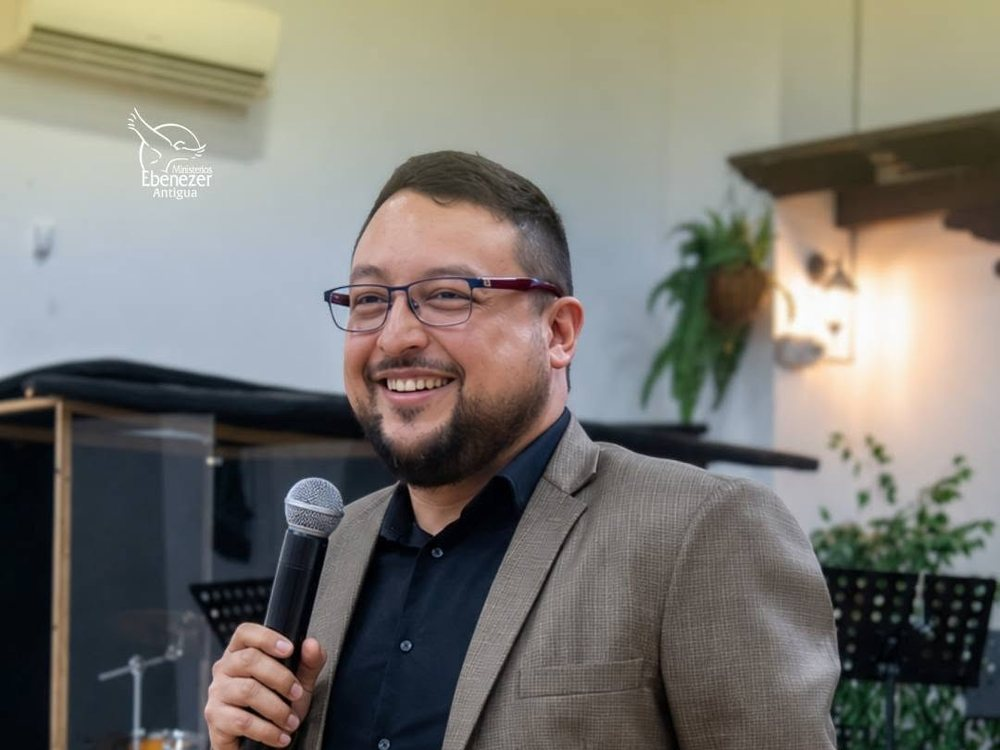

El Pastor Rodrigo Ordóñez analiza el simbolismo del vino en la Biblia para explicar cómo el gozo del Espíritu Santo transforma la vida del creyente.
En resumen
- 01
Al hablar de embriagarse en este mensaje se refiere a la llenura del Espíritu Santo (1 Corintios 12:13; Hechos 2).
- 02
El gozo como necesidad ante las dificultades.
- 03
Fiesta en el Señor: dejar la solemnidad excesiva.
- 04
El vino espiritual da fuerza y vigor (Zacarías 9:17).
- 05
La Santa Cena como oportunidad de arrepentimiento, perdón y comunión.
Distinción espiritual
Aclara que al hablar de «embriagarse» o de los efectos del vino se refiere exclusivamente a la llenura del Espíritu Santo, y cita Proverbios 23:20, 1 Corintios 12:13, Cantares 5:1 y Hechos 2:1-15 para ilustrar el gozo espiritual diferenciándolo de la bebida terrenal.
Lo que se dijo desde el púlpito
Fragmentos tal como se pronunciaron (con puntuación añadida) y el minuto exacto del video.
«Por un solo Espíritu fuimos todos bautizados en un solo cuerpo, sean judíos o griegos, sean esclavos o libres; y a todos se nos dio a beber de un mismo Espíritu». Interesante, ¿va?, que dice «se nos dio a beber». Está hablando de una bebida. Se nos dio a beber del Espíritu. Mire, allá le llaman bebida espirituosa, pero aquí está hablando de una bebida espiritual.
No es lo mismo. Diga conmigo: no es lo mismo. Pero quiero que empecemos a ver algunas situaciones que las tenemos que comparar con lo que pasa allá afuera, y que no es lo mismo, porque es en sustancia espiritual.
El gozo como necesidad
Argumenta que, ante la difícil situación económica del mundo, el creyente necesita el gozo del Señor para no caer en la amargura. Cita Salmo 104:15 y Proverbios 3:9-10.
[…] usted que dice estar lleno del Espíritu Santo tiene que emborracharse del amor del Señor, y eso le va a ir quitando algunos inhibidores. Se va a sentir usted más libre: puede danzar, puede reír, puede gozar, gritar, llorar.
Y si alguien nos mira de allá afuera y dice: «Uy, esos están locos o están borrachos», somos las dos cosas: locos por Cristo y borrachos del amor de Cristo en nosotros. Ese es el resultado de su amor.
Fiesta en el Señor
Insta a la congregación a dejar la solemnidad excesiva y alegrarse ante el Señor, como los apóstoles en Pentecostés, a quienes confundieron con ebrios por su gozo.
Fortaleza y comunión
Con Zacarías 9:17 explica que el vino espiritual aporta fuerza y vigor, y con Eclesiastés 9:7 lo relaciona con la Santa Cena, en la que la persona, aceptada por Dios, bebe con alegría.
Hoy el Señor lo que quiere es que usted se acerque a la mesa, y la mesa nos habla de comunión. Y esa comunión nos habla de que Dios nos ama. No le importa cómo eres. Ahí estaba Mefiboset, a quien le dijo: «Te vas a sentar todos los días de tu vida aquí conmigo en esta mesa y vas a tener comunión conmigo; va a ser tan hermosa la comunión, porque te voy a dar pan, te voy a dar vino, y yo no voy a ver tus piernas lisiadas; lo que voy a ver es tu corazón».
El Señor, en esta Santa Cena, lo que va a venir a ver es su corazón; y aquel que entregue su corazón a Dios sinceramente, va a recibir un gozo tremendo.
La Santa Cena
El servicio incluye la administración de la Santa Cena como oportunidad de arrepentimiento, perdón y comunión con Dios, dejando atrás cargas, tristezas y pasados dolorosos.
Versículos citados
- Proverbios 23:20 Advertencia contra los bebedores de vino y los glotones.
- 1 Corintios 12:13 A todos se nos dio a beber del mismo Espíritu.
- Cantares 5:1 Comer y beber embriagándose: gozo en el Señor.
- Hechos 2:1-15 Pentecostés: los apóstoles confundidos con ebrios.
- Cantares 1:2 Los amores del amado son mejores que el vino.
- Salmo 104:15 El vino que alegra el corazón.
- Proverbios 3:9-10 Honrar al Señor con las primicias.
- Zacarías 9:17 El vino da fuerza a los jóvenes.
- Eclesiastés 9:7 Comer el pan con gozo y beber el vino con corazón alegre.
- Ester 5:6 El banquete del vino con el rey.
Cierre de la reunión
El mensaje concluye con la Santa Cena y un llamado a gozarse delante del Señor.
Para conversar en tu casa
Preguntas para pensar a solas o conversar en familia, a partir de lo que se enseñó.
- ¿Dónde has estado buscando alegría: en lo que ofrece el mundo o en la llenura del Espíritu Santo?
- ¿Qué inhibiciones o complejos necesitas que el Señor te vaya quitando para adorarlo con libertad y gozo?
- Al acercarte a la mesa de la Santa Cena, ¿qué parte de tu corazón quieres entregarle sinceramente al Señor?

Dios no quiere una religión aprendida de hombres, quiere una relación.
15 enseñanzas publicadas en este sitio.
Ver todas sus enseñanzas →Este artículo resume lo expuesto en la enseñanza; no sustituye escucharla completa en el video de arriba.
¿Quieres escucharlo en persona? Conoce nuestros horarios de culto y cómo visitar la Iglesia Cristiana Ebenezer Antigua en Jocotenango. También puedes seguir los cultos en vivo.
Más enseñanzas
 EsperanzaLa Esperanza de su VenidaAnciano José Carlos MéndezEl Anciano José Carlos Méndez comparte una reflexión sobre la importancia de mantener una actitud de espera activa, gozosa y firme ante la promesa…
EsperanzaLa Esperanza de su VenidaAnciano José Carlos MéndezEl Anciano José Carlos Méndez comparte una reflexión sobre la importancia de mantener una actitud de espera activa, gozosa y firme ante la promesa… FidelidadSé fiel hasta la muerteAnciano Estuardo SotoEl Anciano Estuardo Soto desarrolla un mensaje sobre la fidelidad en la vida del creyente, que va mucho más allá de la fidelidad de pareja.
FidelidadSé fiel hasta la muerteAnciano Estuardo SotoEl Anciano Estuardo Soto desarrolla un mensaje sobre la fidelidad en la vida del creyente, que va mucho más allá de la fidelidad de pareja. Nuevo nacimientoNacer de nuevoPastora Débora de GarcíaLa Pastora Débora de García ministra sobre el nuevo nacimiento, a partir del diálogo de Jesús con Nicodemo en Juan 3:3-7.
Nuevo nacimientoNacer de nuevoPastora Débora de GarcíaLa Pastora Débora de García ministra sobre el nuevo nacimiento, a partir del diálogo de Jesús con Nicodemo en Juan 3:3-7.